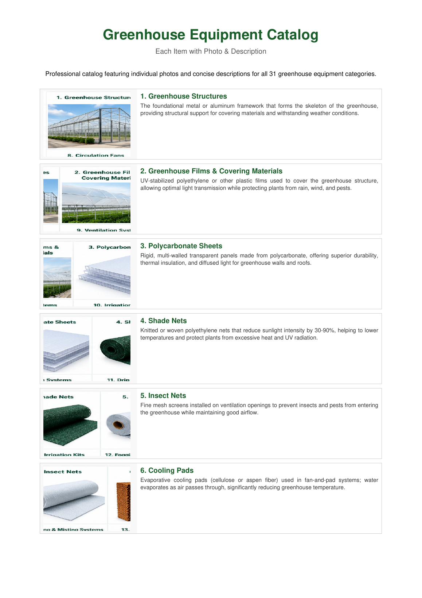

01
Greenhouse Structures
The foundational metal or aluminum framework that forms the skeleton of the greenhouse, providing structural support for covering materials and withstanding weather conditions.

MAFGREEN Equipment Solutions
A professional overview of 31 greenhouse equipment categories covering structures, climate systems, irrigation, hydroponics, automation, growing accessories, and maintenance supplies.
Equipment Categories
From structure to maintenance
Browse the main systems and components used in modern greenhouse projects.
The foundational metal or aluminum framework that forms the skeleton of the greenhouse, providing structural support for covering materials and withstanding weather conditions.
UV-stabilized polyethylene or other plastic films used to cover the greenhouse structure, allowing optimal light transmission while protecting plants from rain, wind, and pests.
Rigid, multi-walled transparent panels offering durability, thermal insulation, and diffused light for greenhouse walls and roofs.
Knitted or woven polyethylene nets that reduce sunlight intensity, lower temperatures, and protect plants from excessive heat and UV radiation.
Fine mesh screens installed on ventilation openings to prevent insects and pests from entering while maintaining airflow.
Evaporative cooling pads used in fan-and-pad systems to reduce greenhouse temperature as water evaporates through incoming air.
High-volume industrial fans that expel hot and humid air and create negative pressure to draw in cooler outside air.
Horizontal airflow fans that distribute air uniformly, reduce humidity pockets, and support stronger plant growth.
Automated or manual roof vents, side vents, fans, and controls that regulate air exchange, temperature, and humidity.
Complete watering setups including pipes, valves, controllers, and emitters for efficient and uniform water distribution.
Precision systems with drippers, tubing, and connectors that deliver water and nutrients directly to the plant root zone.
High-pressure systems that generate fine mist or fog to cool the air and increase humidity for optimal plant growth.
Equipment that injects liquid fertilizers and nutrients into irrigation water for precise and efficient plant feeding.
Centrifugal or submersible pumps used to move water from storage sources to irrigation and other greenhouse systems.
Sand, screen, or disc filters that remove sediments and impurities to prevent irrigation emitters from clogging.
Large-capacity metal, plastic, or fiberglass tanks for rainwater, treated water, or irrigation water storage.
Soilless growing technologies such as NFT, DFT, and media beds that deliver nutrient-rich water directly to plant roots.
Plastic trays, channels, and gutters used to hold growing media or support plants in hydroponic and soil-based systems.
Renewable growing substrates with strong water retention, aeration, and disease-resistance characteristics.
Multi-cell plastic trays for germinating seeds and raising young seedlings before transplanting.
Integrated automated systems that monitor and regulate temperature, humidity, ventilation, and other environmental conditions.
Central electronic controllers connected to sensors that automatically manage temperature, humidity, and CO2 levels.
Digital sensors that continuously measure and display real-time air temperature and relative humidity.
Devices with sensors and regulators that maintain optimal carbon dioxide levels to support photosynthesis and plant growth.
Gas, diesel, or electric heating units with thermostats used to maintain target temperatures in cold conditions.
Energy-efficient fixtures providing full-spectrum or targeted wavelengths to supplement natural sunlight or enable indoor growing.
Wire, pole, and netting systems used to support climbing plants and heavy fruiting crops.
Plastic hooks and strong polypropylene twine used to train plants vertically, especially tomatoes, cucumbers, and peppers.
Clips, ties, grommets, and small fittings used for securing films, supporting plants, and greenhouse assembly.
Hinged or sliding doors, vent windows, insect screens, and related hardware for access and additional ventilation.
Replacement bearings, belts, filters, nozzles, tools, and consumables for routine greenhouse maintenance and repairs.
Contact MAFGREEN for detailed specifications, project-specific equipment selection, pricing, and custom greenhouse system integration.
Contact MAFGREEN